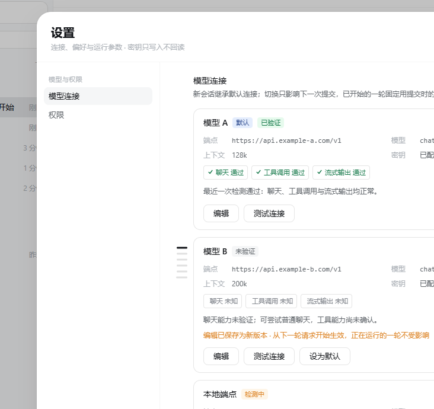

MANUAL · 第 2 章
连接一个模型
没有连接时什么都发不出去。这一章只做一件事：把一条连接配好并测通。
添加一条连接
- 「设置」→「模型连接」→「添加连接」。
- 「名称」只在本机显示，例如「主力模型」。
- 「端点（base_url）」填供应商的接口地址，例如
https://api.example.com/v1。非本机回环地址必须用 HTTPS；确实要用明文 HTTP，需要勾选风险确认。 - 「模型 ID」填供应商文档里的模型名，不是显示名。
- 「上下文窗口（token，必填）」按模型文档填、不要猜：它既决定能塞多少上下文，也决定什么时候触发自动压缩；必须大于「输出上限」。
- 按需调整「输出上限（max_tokens）」、温度、超时与重试次数。
- 「鉴权」选「需要 Key」时填密钥；本机端点可以选「本机端点，不需要 Key」。
- 可选项：勾选「按增量流式展示最终回答（失败会退化为一次完整回答）」；模型确实支持图片时再勾「这条连接支持图片输入」。
- 「保存并设为默认」或「保存修改」。

密钥怎么存
密钥只写入、不回读：页面只显示「已配置（只能覆盖写入，不回读）」或「未配置」， 修改时留空表示保留原值。它保存在本机设置库（与连接、能力开关同一个 SQLite 文件）， 不进入日志、导出与截图。
启动时如果拿不到可用的设置库，密钥会降级成「仅本次进程内 · 重启后需重新录入」， 页面会明确提示——这种情况下重启后需要重新填一次。
「测试连接」测什么
卡片上的「测试连接」会真实请求端点，依次验证聊天、工具调用与流式三项能力，可能产生少量费用； 它不执行任何工具，也不写记忆。结果是分项结论（通过 / 失败 / 未知）：
- 「未知」表示端点接受请求、但这次回答没有发起工具调用——这是模型行为，不能当成能力缺失；
- 鉴权失败、限流与超时会分别标注，而不是笼统地写「连接失败」。
几个常见判断
- 输入区出现「未流式」：这条连接没开流式，回答会在完成时一次性出现，不是卡住。
- 上下文窗口填小会提前压缩历史；填大可能高估模型实际能吃下的内容。两者都以供应商文档为准。
- 勾了「支持图片输入」但模型其实不支持，带图的请求会失败；不确定就别勾。
- 切换连接只影响下一次提交；正在跑的一轮固定用提交时的连接与凭据。
最后更新 2026-10-19 · 适用版本 v1.0